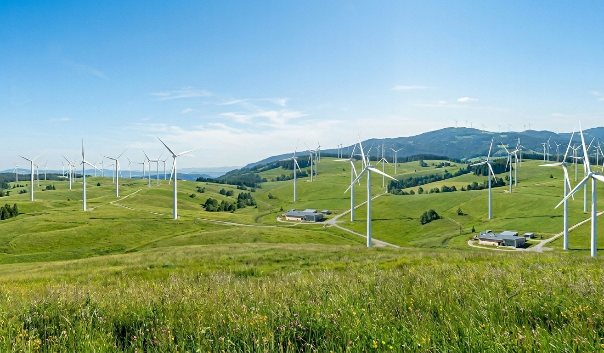
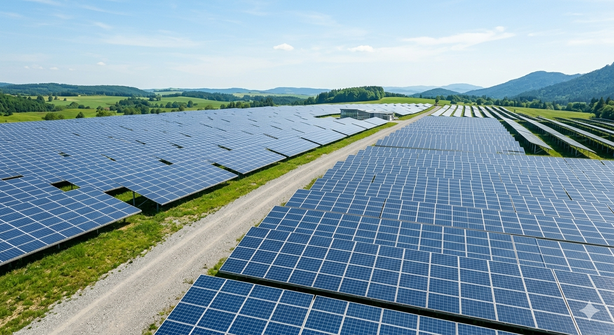

Kami menghadirkan solusi energi bersih yang inovatif, efisien, dan berkelanjutan untuk mendukung transformasi sistem energi yang lebih bertanggung jawab.
Di Asri Energy, kami memandang transisi energi sebagai langkah strategis untuk menghadirkan masa depan energi yang berkelanjutan bagi generasi mendatang.
Kami membangun ekosistem di mana kemajuan teknologi industri dan kelestarian alam berjalan beriringan.

Pengembangan berkelanjutan skala besar yang tervalidasi secara internasional untuk reduksi karbon industri.
Kami menyediakan dasbor analitik real-time berbasis standar emisi internasional untuk menghitung volume karbon yang berhasil ditekan oleh sistem energi Anda.
Ya, spesialisasi utama kami adalah merancang dan mengintegrasikan infrastruktur energi terbarukan grid-scale untuk kawasan industri dan pabrik.
Kami menawarkan paket pemeliharaan berkala penuh dan pemantauan sistem otomatis 24/7 guna memastikan efisiensi daya tetap optimal.
Siap melangkah ke solusi keberlanjutan? Hubungi tim ahli kami untuk konsultasi infrastruktur energi terbarukan gratis.
Email: hello@asrirenewable.com
Telepon: +62 21 8932 3920
Alamat: Sudirman Central Business District, Jakarta, Indonesia
Silakan isi detail di bawah ini dan tim kami akan segera menghubungi Anda.